Микросервисы 2025 — что под капотом?
Денис Аникин, https://xfenix.ruКто я

- Техлид в AI Platform в Райфе
- Лидер корп. Python Community
- Python, typescript, kubernetes, архитектура
- Выступаю, работаю в ПК
Наш стек
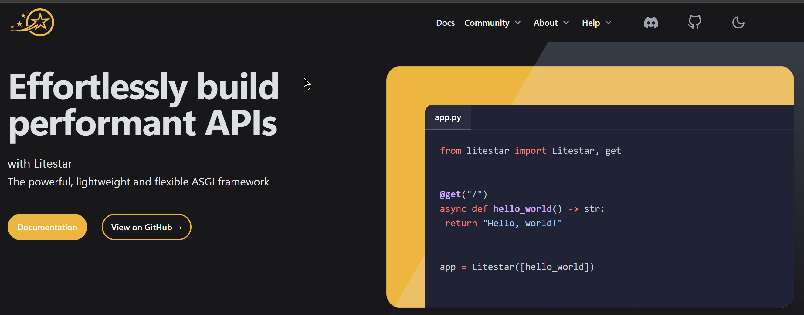
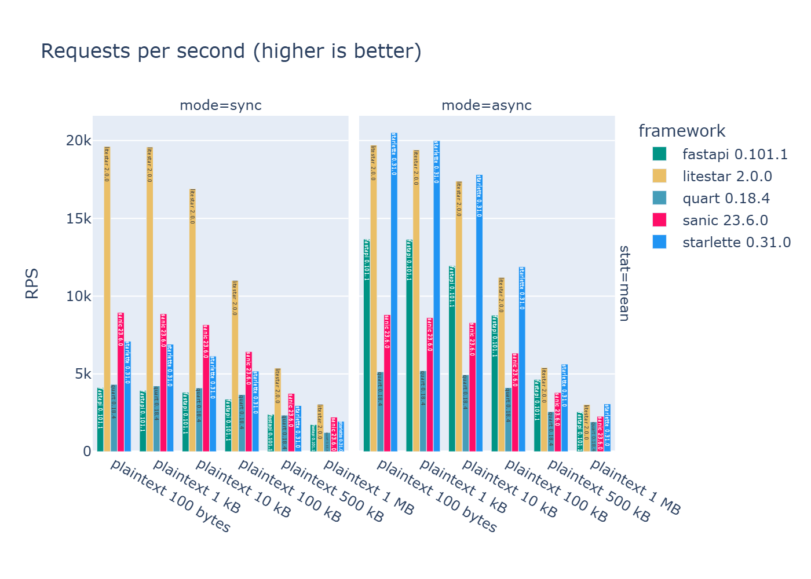
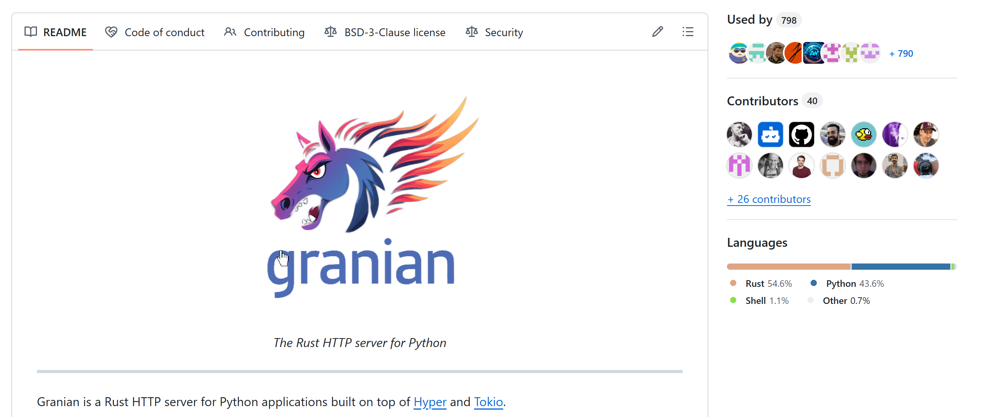
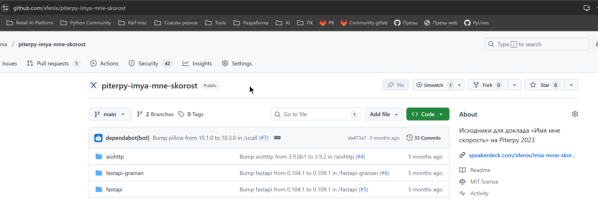
class SpecificResponse(pydantic.BaseModel):
status: int
class SomeSpecificClient(base_client.BaseClient):
async def run_request(self, params: dict[str, str]) -> SpecificResponse:
response = await self.send(
self.prepare_request(
"GET", "/status/500", params=params, timeout=httpx.Timeout(5)
)
)
return response_to_model(model_type=SpecificResponse, response=response)
...
await SomeSpecificClient(
client=httpx.AsyncClient(base_url="https://postman-echo.com", timeout=...),
retrier=circuit_breaker_box.Retrier[httpx.Response](...),
).run_request()
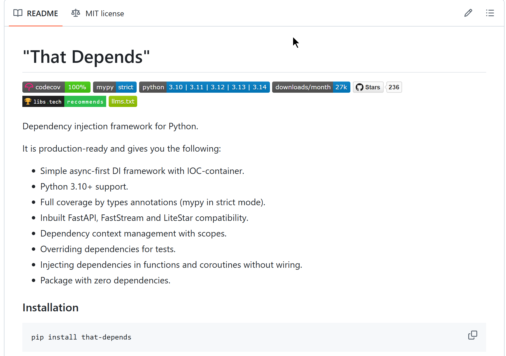
Почему не dishka?
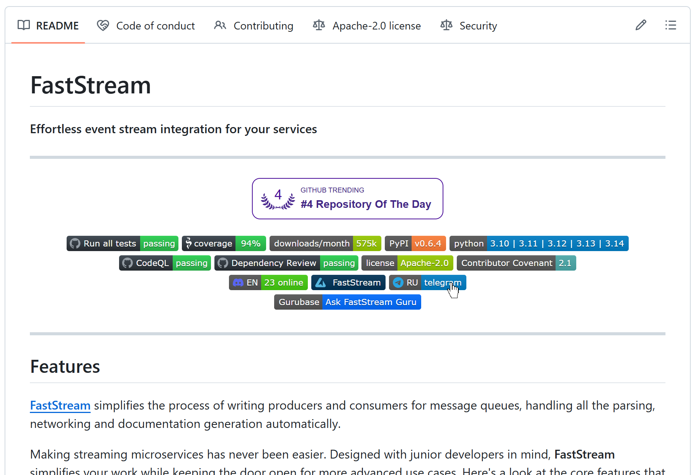
Под вопросом
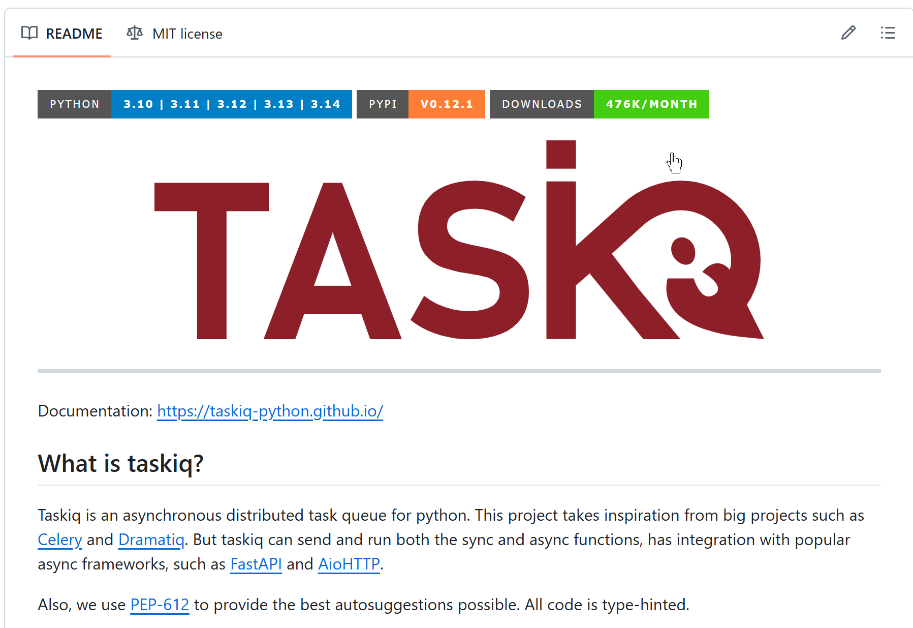
Сомнения на тему таскика
Как выбираем решения?
Что ещё?
- aiofile > aiofiles
- mpire > multiprocessing
- selectolax > beautifulsoup
- cachebox
- pyvips > pillow
- polars > pandas
- structlog + memory handler
- pydantic ai
Полный список
https://github.com/community-of-python/pylines/…/our-stack.mdLayout микросервиса
Что нужно в микросервисе
- Правильное логгирование (json, memory handler)
- Open telemetry
- Sentry/Glitchtip
- CORS
- Prometheus, Pyroscope
- Healthcheck
- APP сервер (
uvicorn, granian)
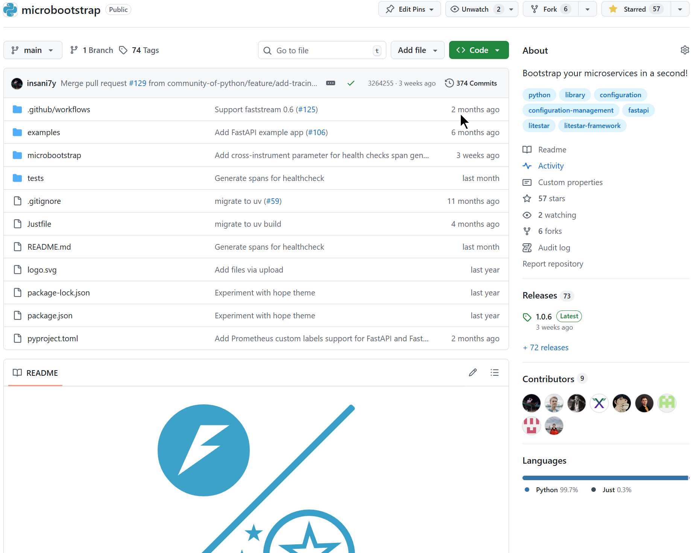
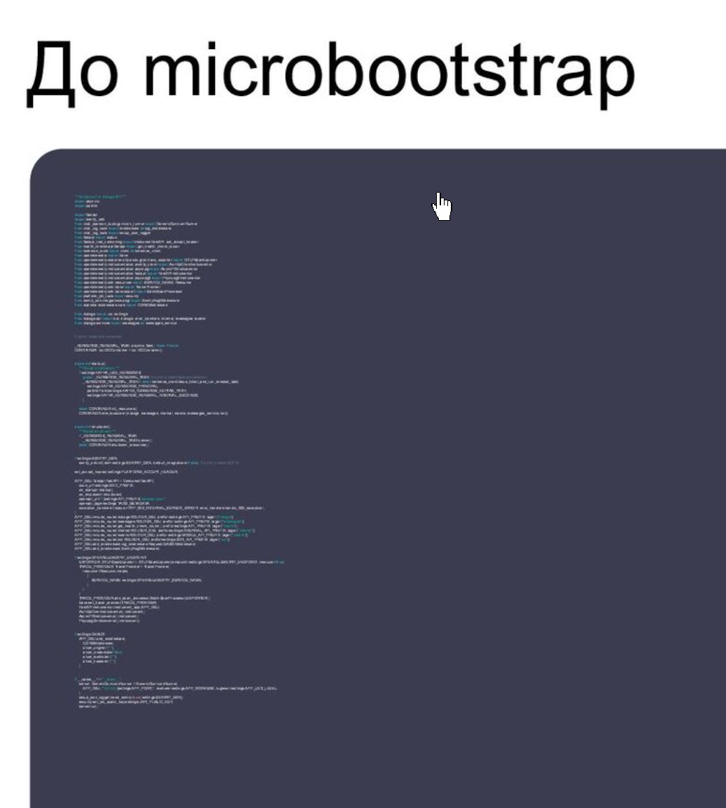
# settings.py
from microbootstrap import LitestarSettings
class YourSettings(LitestarSettings):
... # Your settings are stored here
settings = YourSettings()
# application.py
import litestar
from microbootstrap.bootstrappers.litestar import LitestarBootstrapper
from your_application.settings import settings
application: litestar.Litestar = LitestarBootstrapper(settings).bootstrap()
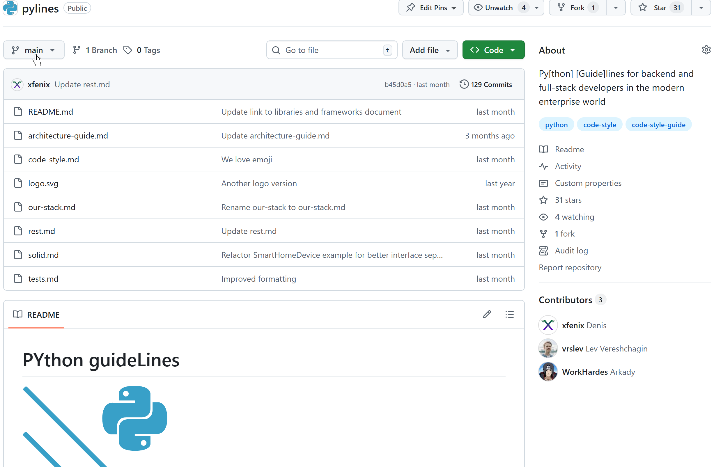
Код стайл
Основные принципы
- Соблюдать PEP8, PEP257, PEP484, PEP526
- Длина строки до 120 символов
- Импорты встроенных библиотек целиком
- Более 2 импортов из модуля — импортировать весь модуль
- Покрывать 100% кода аннотациями типов
Типизация
- Скалярные типы выводятся mypy автоматически
- Максимум сужения типов
- Используем typing.Final для констант
- TypedDict для сложных структур
- dict с Literal для максимально точной типизации
import typing
SOME_CONST: typing.Final[
dict[typing.Literal['what', 'kek'], typing.Literal[5, 'raz']]
] = {
'what': 5,
'kek': 'raz',
}
Обращения по индексам и ключам
- item[0] и item[«key»] будут падать — обрабатывать try-except
- Использовать get для словарей при необходимости
- Иерархия ошибок: LookupError → IndexError/KeyError
- Проверять ключи через in вместо перехвата исключений
Исключения
- Использовать конкретные классы ошибок
- Сужать количество строк внутри try
- Проверять условие лучше, чем ловить исключение
- Exception только в исключительных случаях
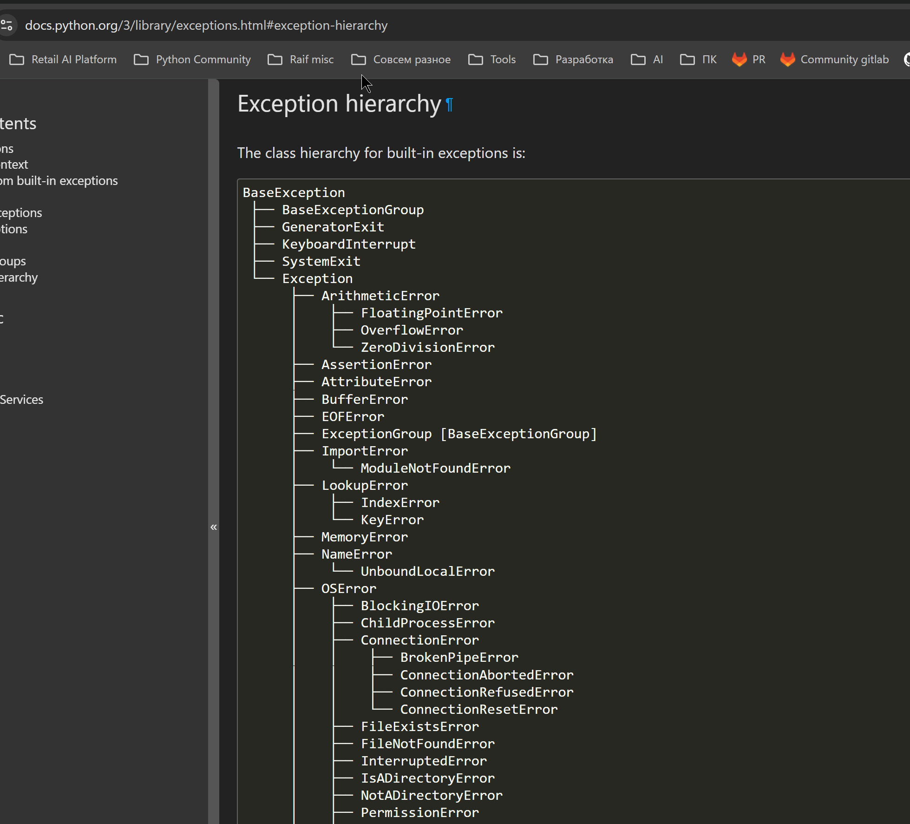
Именование
- Имена переменных и функций ≥8 символов
- Использовать осмысленные названия
- Функции называют глаголами
Самодокументироемость 1
employee_number = 10 # employee number
employee_id = 1 # employee id
def sum_two_numbers(a: int, b: int) -> int:
"""
Sums two numbers. Do not remove. Critical logic.
a should be a, b should be b. If a != a or b != b, behavior undefined.
Might break everything if changed. Works on my machine.
:param a: int — first number, probably
:param b: int — second number, hopefully
:return: int — result (don’t touch)
"""
return a + b
Самодокументироемость 2
employee_number: typing.Final = 10
employee_id: typing.Final = 1
def sum_two_numbers(first_number: int, second_number: int) -> int:
return first_number + second_number
Бой со словом «get»
class HttpFetcher:
def fetch_http_result(self):
self._http_connection.get(...)
class SomethingWithCache:
def build_cache_key(self, user_id):
return self._cache_key + str(user_id)
Неизменяемость
- Переменные — typing.Final
- Классы — typing.final
- Словари — types.MappingProxyType
- Использовать dataclasses с frozen и slots
- Минимизировать изменение состояния
import dataclasses
import types
import typing
SOME_CONST: typing.Final = types.MappingProxyType({'key': 'value'})
@dataclasses.dataclass(kw_only=True, slots=True, frozen=True)
class HttpClient:
httpx_connection: typing.Any
def fetch_user_balance_from_crm(self, user_uuid: str) -> decimal.Decimal:
...
Инверсия условий
- Использовать early return
- Минимизировать вложенность if
- Пример: проверить исключение вместо ловли
- Упрощает чтение и поддержку
def process_something_important(user_payload):
if not user_payload:
print("No data")
return
if not isinstance(user_payload, list):
print("Invalid data")
return
if not all(isinstance(some_index, int) for some_index in user_payload):
print("Invalid list")
return
print(
f"Result: {sum(user_payload)}"
if sum(user_payload) > 0
else "Sum is non-positive"
)
Работа с retry и надежностью
- Использовать stamina для ретраев
- Применять к sql, файлам, HTTP, consumer/producer
- Ограничивать количество попыток и интервал рандомизировать
- circuit breaker для защиты сервисов
- Важные операции именовать retry/resilient/robust
Избегать магии
- Не использовать hasattr/getattr без причины
- Не создавать временные переменные без смысла
- Использовать прямые вызовы вместо лишних присвоений
def something_kek():
return do_another_job()
Path("config.json").write_text("{}")
Регулярные выражения
- Проверять на уязвимость REDoS
- https://devina.io/redos-checker
- Избегать сложных и непроверенных шаблонов
SOLID
SOLID:
- чувствую! Интуитивно!
- перечислишь буквы?
- это база!
- это хороший код!
- ща объясню!
- но там многословно, короче частями следую!
Примеры
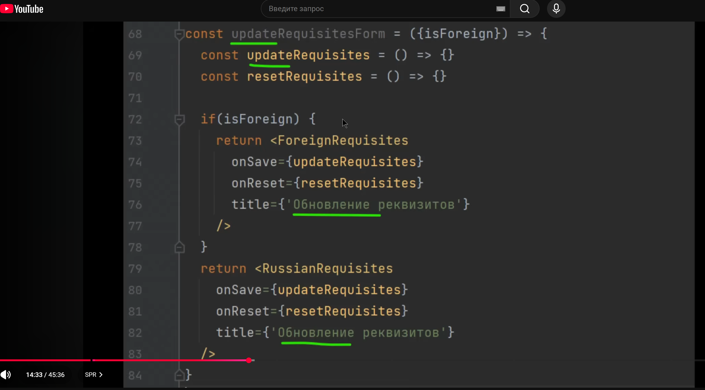
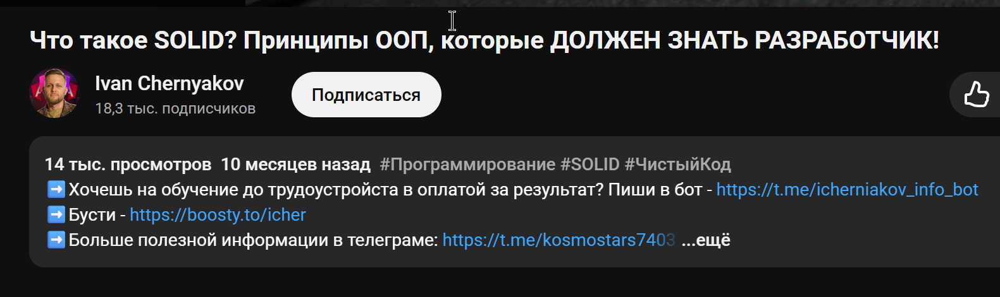
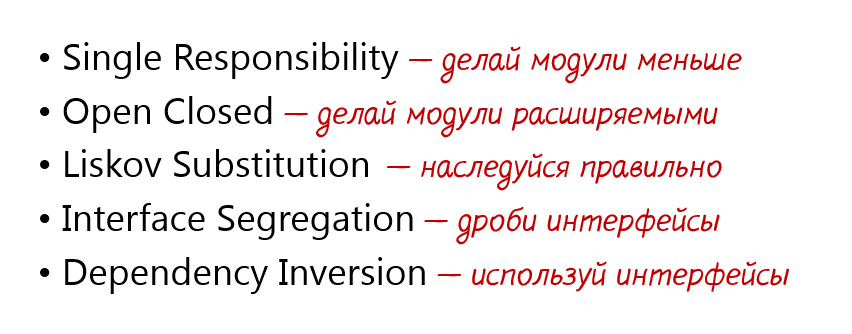
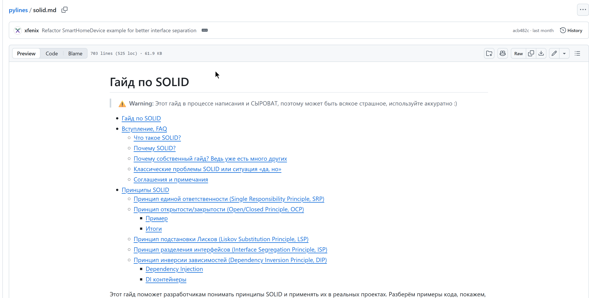
Чем наш гайд лучше?
Какие проблемы решили?
Почему SOLID?
REST
Что такое REST?
Кажется, REST как таковой, слабо достижим
Поэтому
- Урлы — сущности (что такое сущность?)
- /rest[-(public|web|mobile|admin|internal)]/[имя-сервиса]/[имя-сущности]/
- /rpc[-(public|web|mobile|admin|internal)]/[имя-сервиса]/сделай-что-то-что-в-сущность-не-укладывается/
- Скажем нет вложенности, остальное — query параметры
Версионирование
- Версия — не часть сущности, поэтому /v1/ скажем нет
- Версия — метаинформация, а ей место в заголовках
- accept: application/vnd.some.name+json; version=1.0
- By default — версионирование мешает, лучше без него
- Когда точно нужно: мобила, неконтролируемые клиенты
Тесты
Пайплайны и инфра
Что входит
- Сборка: kaniko или buildah
- Автоверсионирование (семвер)
- Один образ для всех окружений
- Линтинг
- Тесты
- ИБ
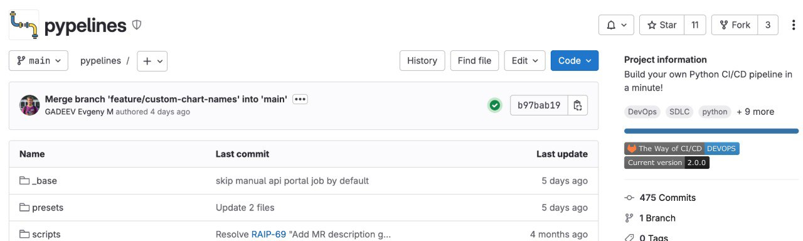
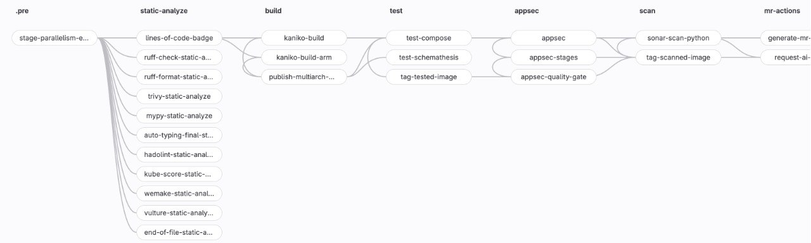
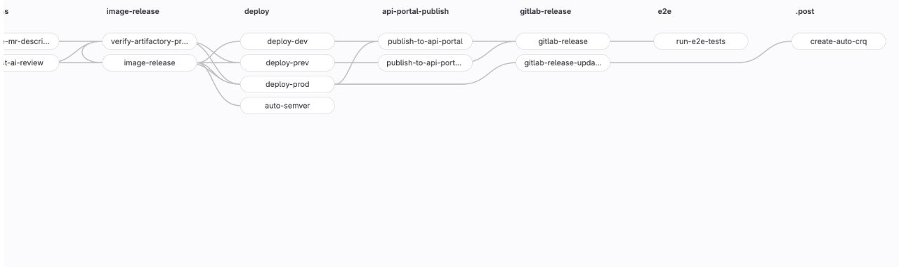
Линтинг
- Аннотации (mypy, typy, pyrefly)
- Ruff
- We make styleguide
- Hadolint
- Auto typing final
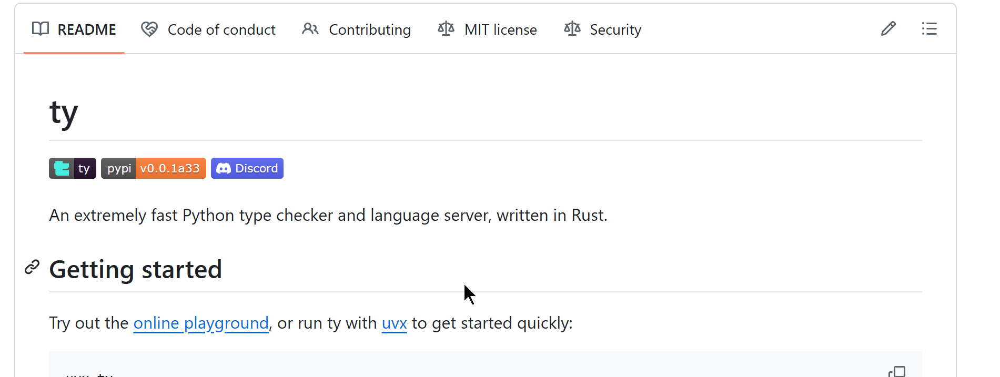
AI описание PR
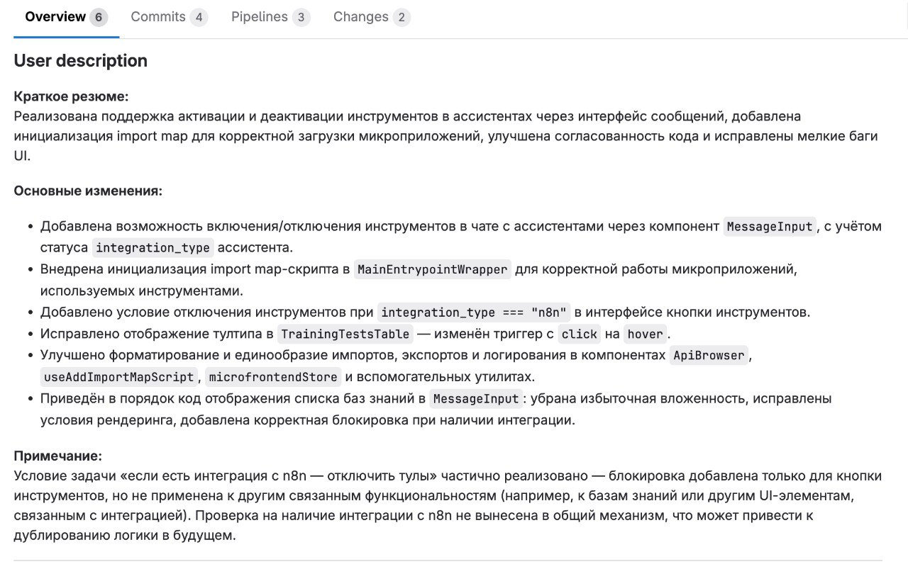